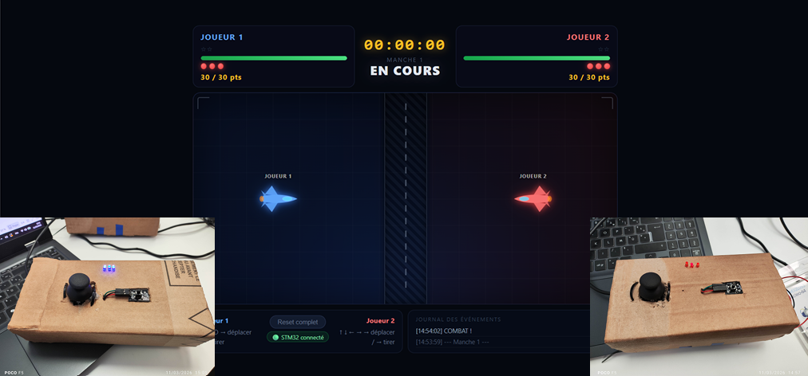

Présentation générale
Ce projet regroupe deux sous-systèmes complémentaires qui forment ensemble un jeu de duel multijoueur piloté par des cartes STM32 :
| Sous-système | Technologie | Rôle |
| Firmware STM32 | C / STM32L053 | Lecture joystick, LEDs de vie, communication UART |
| Interface Web | Vue.js / Node.js | Logique de jeu, rendu, pont WebSocket ↔ série |
Aperçu de l'interface

Interface du jeu de duel – Vue en cours de partie
L'interface affiche :
- En haut : HUD des deux joueurs (nom, barre de vie, LEDs, score) + chronomètre central
- Au centre : Arène de jeu avec les deux avions et la zone neutre
- En bas : Contrôles clavier, boutons de gestion et journal des événements
Architecture globale
┌─────────────────────────────────┐ ┌──────────────────────┐
│ STM32L053 - Joueur 1 │ UART 115200 │ │
│ (COM6) │ ─────────────► │ │
│ ┌───────────┐ ┌───────────┐ │ ◄───────────── │ server.js │
│ │ Joystick │ │ Bouton │ │ 'L' / 'B' │ (Node.js) │
│ │ PA0 (X) │ │ PA4 │ │ │ │
│ │ PA1 (Y) │ └───────────┘ │ │ │ WebSocket
│ └───────────┘ │ │ │ ◄──────────► Navigateur
│ ┌─────────────────────────┐ │ │ │ (Vue.js)
│ │ 3 LEDs: PB6, PC7, PA9 │ │ │ │
│ │ Buzzer: PC0 │ │ │ │
│ └─────────────────────────┘ │ │ │
└─────────────────────────────────┘ │ │
│ │
┌─────────────────────────────────┐ │ │
│ STM32L053 - Joueur 2 │ UART 115200 │ │
│ (COM7) │ ─────────────► │ │
│ ┌───────────┐ ┌───────────┐ │ ◄───────────── │ │
│ │ Joystick │ │ Bouton │ │ 'L' / 'B' │ │
│ │ PA0 (X) │ │ PA4 │ │ │ │
│ │ PA1 (Y) │ └───────────┘ │ └──────────────────────┘
│ └───────────┘ │
│ ┌─────────────────────────┐ │
│ │ 3 LEDs: PB6, PC7, PA9 │ │ + Chronomètre (T\n chaque seconde)
│ │ Buzzer: PC0 │ │
│ └─────────────────────────┘ │
└─────────────────────────────────┘
Composants par joueur :
| Composant | Broches | Fonction |
| Joystick | PA0 (X), PA1 (Y) | Déplacement (UP/DOWN/LEFT/RIGHT) |
| Bouton poussoir | PA4 | Tir (envoie '1') / Relancer la manche |
| LED vie 1 | PB6 | S'éteint sous 21 pts |
| LED vie 2 | PC7 | S'éteint sous 11 pts |
| LED vie 3 | PA9 | S'éteint sous 1 pt |
| Buzzer | PC0 | Signal fin de manche ('B') |
Navigation dans la documentation
Utilisez les onglets ci-dessus pour parcourir :
- Modules : vue organisée par Firmware STM32 et Interface Web
- Fichiers : tous les fichiers sources des deux projets
- Fonctions : index global de toutes les fonctions
Règles du jeu
- Chaque joueur commence avec 30 points (= 3 LEDs allumées).
- Chaque touche adverse retire 1 point.
- Quand le score passe sous un seuil de 10 : une LED s'éteint.
- Score = 0 → joueur éliminé → fin de manche.
- Appuyer sur le bouton de tir (1) après la victoire relance une manche.
Matériel et protocole série
Joystick analogique
Le joystick est connecté sur les entrées ADC :
- PA0 (ADC_IN0) : axe X
- PA1 (ADC_IN1) : axe Y
Le firmware lit les valeurs ADC (0–4095) et envoie une direction :
| Valeur ADC | Direction envoyée |
| vx < 1900 | DOWN\n |
| vx > 2200 | UP\n |
| vy < 1900 | RIGHT\n |
| vy > 2200 | LEFT\n |
Bouton de tir
- PA4 : entrée digitale, actif haut
- Envoie 1\n quand pressé
- Utilisé pour tirer pendant le jeu ou relancer après une victoire
LEDs de vie
Trois LEDs représentent les vies du joueur :
| LED | Broche | Seuil de points |
| LED 1 | PB6 | 21–30 pts |
| LED 2 | PC7 | 11–20 pts |
| LED 3 | PA9 | 1–10 pts |
Commande reçue : 'L' → éteint la prochaine LED (avec clignotement)
Buzzer
- PC0 : sortie digitale (buzzer ou LED de signalisation)
- Commande reçue : 'B' → clignotement 3× puis reset des LEDs
- Utilisé en fin de manche pour signaler la victoire
Chronomètre (Joueur 2 uniquement)
- Le STM32 du joueur 2 envoie automatiquement **'T
'** toutes les secondes
- Utilise la fonction timeur() pour mesurer le temps écoulé
- Le temps total s'affiche en haut de l'écran au format HH:MM:SS
Récapitulatif du protocole
STM32 → PC (messages envoyés via UART) :
| Message | Signification |
| UP\n | Joystick vers le haut |
| DOWN\n | Joystick vers le bas |
| LEFT\n | Joystick vers la gauche |
| RIGHT\n | Joystick vers la droite |
| 1\n | Bouton de tir pressé |
| T\n | Tick chronomètre automatique (joueur 2, chaque seconde) |
PC → STM32 (commandes reçues via UART) :
| Commande | Effet |
| L | Éteint la prochaine LED (avec clignotement) |
| B | Buzzer fin de manche + reset LEDs |
Installation et lancement
Prérequis
- Node.js v18+ installé (nodejs.org)
- npm (inclus avec Node.js)
- Deux cartes STM32L053 flashées avec le firmware Microcontroleurs
- Câbles USB connectés aux ports série (ex: COM6, COM7)
1. Serveur WebSocket (pont série)
cd jeu/server
npm install # installe serialport, ws
Modifier server.js si vos ports COM sont différents :
const PLAYERS = [
{ id: 1, path: "COM6", baudRate: 115200 },
{ id: 2, path: "COM7", baudRate: 115200 }
];
Lancer le serveur :
node server.js # affiche "Serveur WebSocket lancé : ws://localhost:3000"
2. Interface Web (Vue.js)
cd jeu
npm install # installe Vue, Vite et dépendances
npm run dev # démarre le serveur de développement (http://localhost:5173)
3. Jouer
- Brancher les deux cartes STM32 en USB
- Lancer node server.js dans un terminal
- Lancer npm run dev dans un autre terminal
- Ouvrir http://localhost:5173 dans le navigateur
- Le badge passe à "🟢 STM32 connecté" → prêt à jouer !
- Auteur
- SESSOU Winsou Richard et MAZIRE Tristan
- Version
- 1.0
- Date
- 2026
 1.16.1
1.16.1